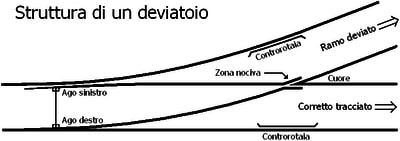

I deviatoi
Introduzione
Il deviatoio serve per prendere un treno che sta su un binario ed instradarlo su un altro.
Sono fondamentali per:
- movimenti e precedenza
- per i bivi
- collegare insieme i fasci di binari
Il deviatoio è composto da varie parti essenziali:
- Aghi: Due barre mobili che deviano le ruote del treno da un binario all'altro, spostandosi lateralmente.
- Cuore: La parte centrale, dove i binari si incrociano, permette il passaggio sicuro delle ruote.
- Controrotaie: Sono guide fisse che assicurano il corretto passaggio delle ruote attraverso il cuore, evitando deragliamenti.

Struttura del deviatoio
 Fascio di binari a Chicago
Fascio di binari a Chicago
Tipologie di deviatoi
deviatoi inglesi
deviatoi semplici,doppi e tripli